LOVEU2 · 21 layouts
Vingt et une directions pour loveu2.ca, avec le vrai contenu du site : 22 dates à venir avec leurs billetteries, 32 spectacles passés, la vidéo et les 4 agences de booking.
Série 3
Les 8 nouveaux, dans l'esprit des cinq premiers : des animations franches, et toutes les dates visibles d'un coup Nouveau
NouveauNeon
Le nom s'allume en tubes de néon sur un mur de briques, avec de vrais ratés. Les dates s'allument en vague et brillent au survol.
Ouvrir →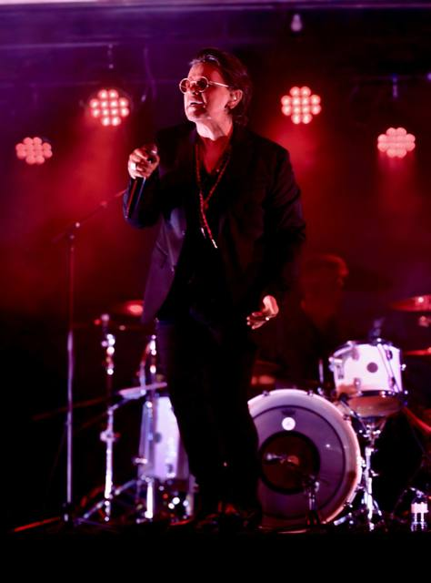
NouveauTicket Stub
Un grand billet glisse à l'écran et le tampon « Admit one » s'écrase dessus. Chaque date est un billet dont le talon se détache au survol.
Ouvrir → Nouveau
NouveauSplit
L'écran coupé en deux, couleur et noir et blanc ; la coupe suit la souris. Canada à gauche, Europe à droite, et un curseur avant/après.
Ouvrir → Nouveau
NouveauAurora
Des aurores vert, blanc et orange dérivent derrière du verre givré. Les dates sortent du flou, avec une lueur qui suit le pointeur.
Ouvrir →Street Posters
Les affiches claquent sur un mur de béton et le mur tremble. Chaque date est une affiche collée au ruban, en vert, orange, crème ou noir.
Ouvrir →Cinema
Les bandes du cinémascope s'ouvrent sur un générique. Les dates sont un horaire de séances avec le jour de la semaine, et une pellicule défile.
Ouvrir →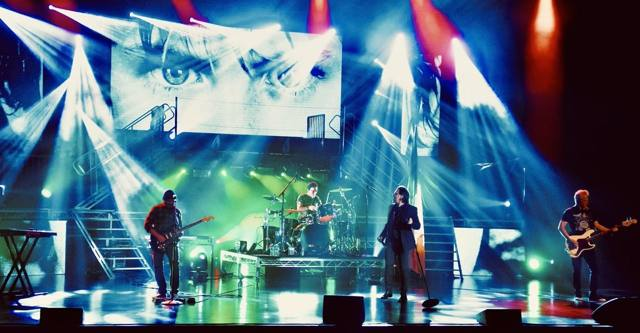
NouveauLineup
Une affiche de festival au coucher de soleil : toutes les villes forment le lineup d'un coup d'œil, la date apparaît au survol.
Ouvrir →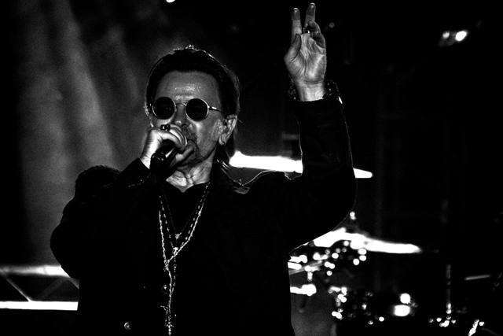
NouveauBauhaus
Des formes géométriques glissent et s'assemblent en affiche, puis bougent avec la souris. Les dates sont des tuiles qui basculent en place.
Ouvrir →Série 2
Les 8 plus spectaculaires, avec de longues mises en scène au défilement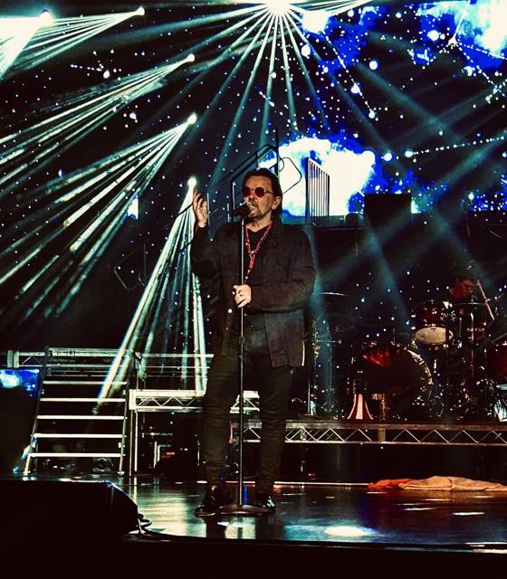
Vertigo
Une spirale hypnotique où les villes tournent en orbite, puis un vol en 3D à travers un tunnel de photos : chaque date est une porte qu'on traverse.
Ouvrir →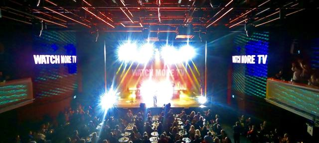
Sphere
6 500 particules en WebGL : le mot LOVEU2 devient une sphère, puis un globe où les villes de la tournée s'allument, puis une onde sonore.
Ouvrir →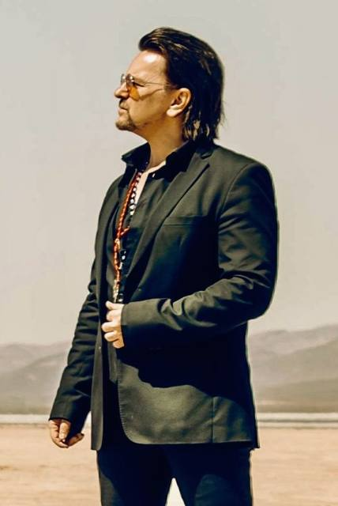
Vinyl
Le disque sort de sa pochette. Les dates sont les plages d'un album : face A au Canada, face B en Europe. Le bras avance au défilement.
Ouvrir →
All Access
Un laissez-passer backstage holographique qu'on attrape et qu'on lance. Une passe par date qui pivote au centre, et un mur de polaroïds à déplacer.
Ouvrir →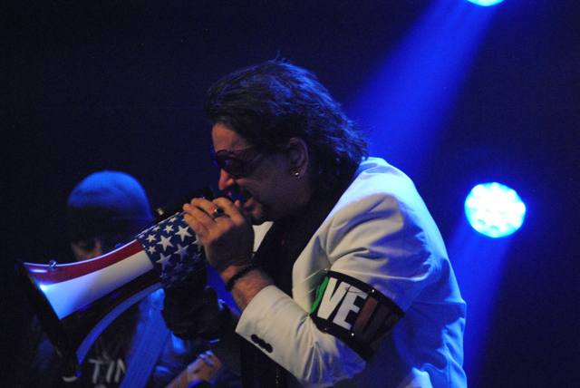
Live Board
Un tableau de bord en tuiles vivantes : diaporama, compte à rebours, route tracée en boucle, égaliseur, liste qui défile. Tout s'incline sous la souris.
Ouvrir →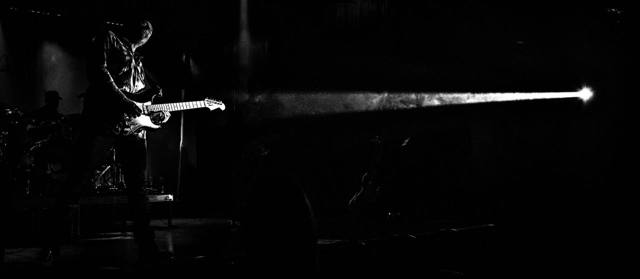
Highway
Une route de nuit en 3D : on roule au défilement, les panneaux verts annoncent chaque ville, l'odomètre compte les vrais kilomètres.
Ouvrir →Magazine
Un magazine de tournée : la couverture se monte puis s'ouvre, et les dates sont dans un livre dont les pages se tournent pour vrai.
Ouvrir →Encore
La fumée de scène ondule, les lettres fuient le curseur. Puis chaque ville s'assemble lettre par lettre et s'envole vers nous.
Ouvrir →Série 1
Les 5 premiers
Stadium
Les lettres tombent une à une, la scène tremble, des faisceaux balaient l'écran. Compte à rebours jusqu'au prochain spectacle, photo qui s'ouvre au défilement, galerie horizontale.
Ouvrir →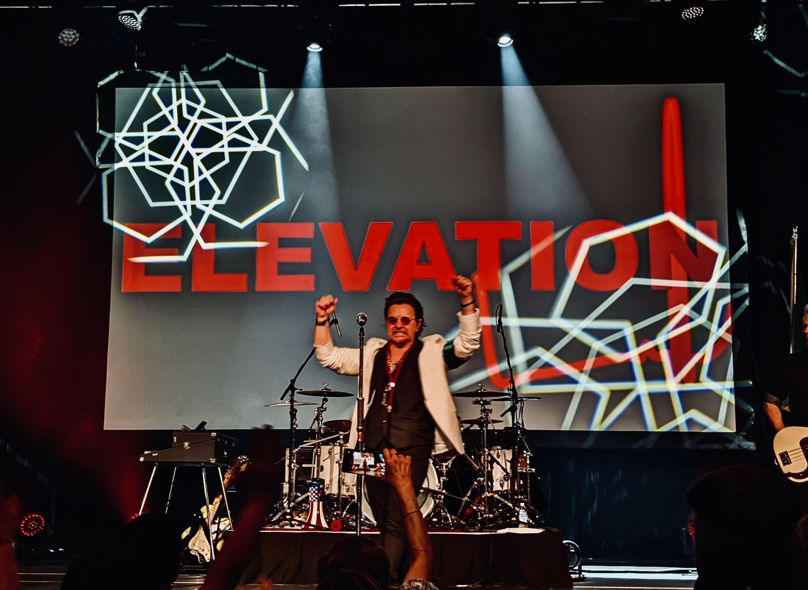
Zoo TV
Un mur de télés qui changent de chaîne, un titre en glitch, des dates sur un tableau à palettes qui tournent, et un zapping piloté par le défilement.
Ouvrir →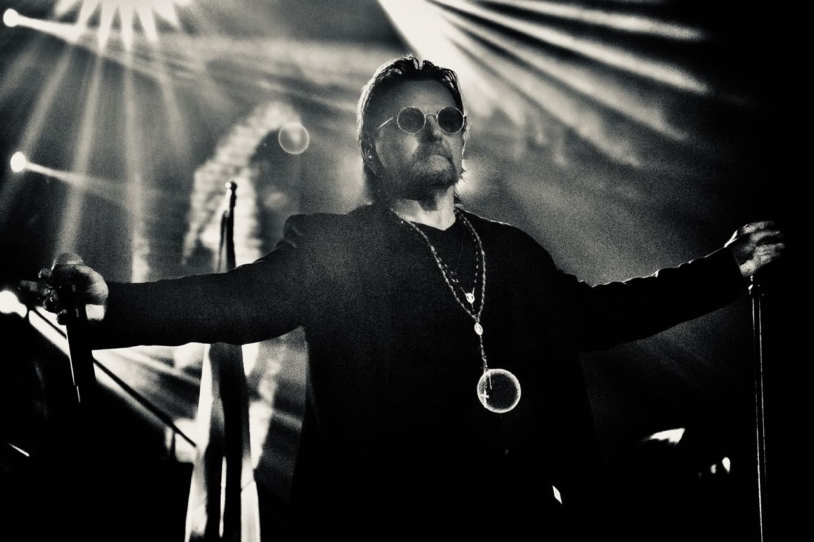
Tour Poster
Une affiche de tournée en noir et blanc. On plonge dans les lettres du nom, le texte se remplit d'encre, et les photos prennent leurs couleurs.
Ouvrir →
World Tour
La route de la tournée se trace au défilement, de Québec jusqu'à Lyon, et la caméra traverse l'Atlantique. Calendrier par mois.
Ouvrir →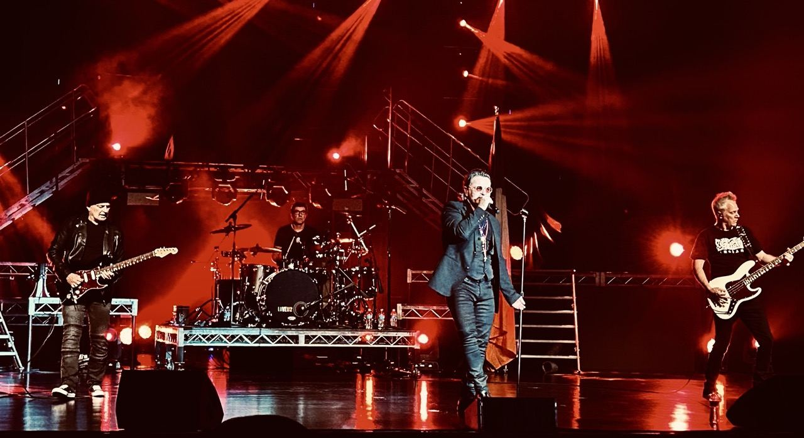
Light Show
Un projecteur révèle la couleur, les téléphones de la foule scintillent, le nom s'allume en néon, et une roue de billets tourne au défilement.
Ouvrir →